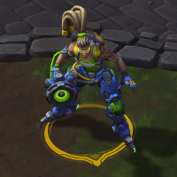
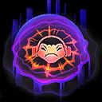

Lucio
Welcome to our Lúcio guide for Heroes of the Storm. Here you will learn everything you need to know in order to play Lúcio in a competitive environment, whether you play on your own or with a team.
Reverse Amp Build
| Level 1 | Level 4 | Level 7 | Level 10 | Level 13 | Level 16 | Level 20 |
|---|---|---|---|---|---|---|
|  |
The Reverse Amp focuses on enhancing Lucio's offensive potential by adding a powerful Movement Speed Slow and AoE damage to his kit. Furthermore, talents like Maximum Tempo Icon Maximum Tempo and Hard Style Icon Hard Style allow Lucio to quickly skate in and out making him very hard to catch for the enemy team. We generally recommend this build when playing as a second Support, however, it works quite well while solo supporting as well.
Sound Barrier Build
| Level 1 | Level 4 | Level 7 | Level 10 | Level 13 | Level 16 | Level 20 |
|---|---|---|---|---|---|---|
The Sound Barrier Build shares multiple talents with the Reverse Amp Build, however, with its massive shields it focuses more on Lucio's defensive capabilities. Keep in mind that Back in the Mix Icon Back in the Mix is a strong but situational talent, which we recommend against multiple Stuns and Silences. If the enemy team has a lot of those crowd control effects, Back in the Mix Icon Back in the Mix can be a worthy alternative choice. Bossa Nova Icon Bossa Nova at Level 20 causes Sound Barrier Icon Sound Barrier's shields to decay faster, however, reducing its cooldown from 80 to 30 seconds more than makes up for it. If you do not feel comfortable picking Bossa Nova, pick Bonus Track Icon Bonus Track instead.
Go Back